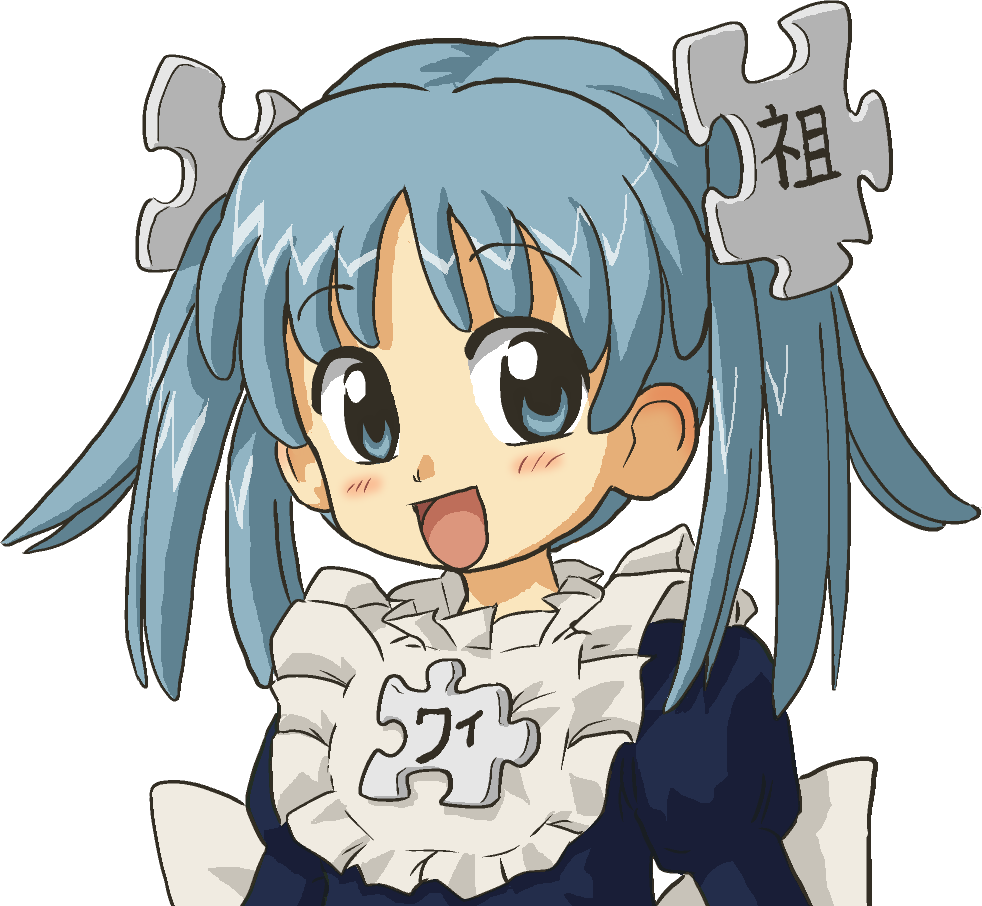

아니메(일본어: アニメ, Anime) 또는
재패니메이션(영어: Japanimation)은
일본의 애니메이션을 일컫는 말이다.
주로 기존에 연재되는 동명의 인기있는 만화나 라이트 노벨을
원작으로 제작되며, 장면의 대부분은 셀 애니메이션 방식이 사용된다.
' 아니메 '는 영어 단어 'Animation (애니메이션)'이 변형된 형태이다.
다른 언어에서, 이 용어는 일본에서 온 애니메이션이나 다채로운 그림,
활기찬 캐릭터와 판타지적 주제를 가진 일본풍의 애니메이션
스타일을 가진 애니메이션을 의미한다.